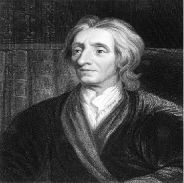

No século XVII, um filósofo inglês chamado John Locke revolucionou a forma como pensamos sobre governo e sociedade. Considerado o “pai do liberalismo”, Locke defendeu que todo ser humano nasce com direitos naturais, como a vida, a liberdade e a propriedade. Suas ideias ecoam até hoje nas constituições democráticas.
Em uma época marcada por reis absolutistas, John Locke se destacou ao afirmar que o poder deve vir do povo e não apenas da coroa. Para ele, o governo existe para proteger os cidadãos, e, caso falhe, pode ser destituído. Uma ideia ousada que influenciou diretamente revoluções históricas, como a Americana e a Francesa.
Mais do que política, Locke também se dedicou a temas como religião e educação. Defendia a tolerância religiosa, acreditando que cada indivíduo deveria ter o direito de escolher sua fé. Essa visão progressista ajudou a abrir espaço para a liberdade de consciência, um valor essencial nas sociedades modernas.
Nascido em 1632, John Locke atravessou um período turbulento da história inglesa. Suas obras, como Segundo Tratado sobre o Governo Civil, ultrapassaram fronteiras, inspirando líderes e revolucionários em diferentes países. Hoje, Locke é lembrado como um dos grandes arquitetos do pensamento político ocidental.